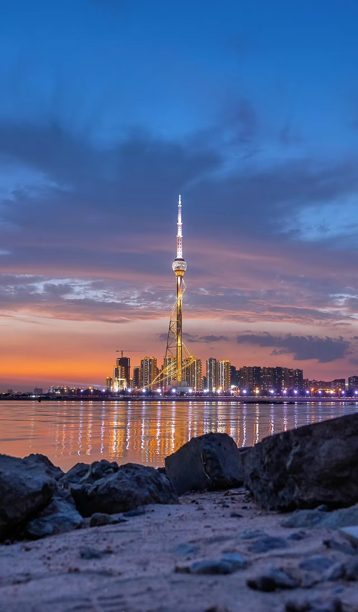

城市概况
在山东东南部，有一座魅力非凡的城市——临沂。它面积1.72万平方公里，户籍人口1200万 ，是山东面积最大、人口最多的市，享有"中国市场名城""中国物流之都"等美誉。
历史文化
历史文化
临沂历史底蕴深厚，建城史近3000年。这里是《孙子兵法》《孙膑兵法》竹简的出土地，思想家荀子、宗圣曾子、智圣诸葛亮、书圣王羲之等诸多名人都在此留下足迹，孔子72贤徒有13人、24孝中有7孝诞生于此。作为全国著名的革命老区，刘少奇、陈毅等老一辈革命家曾在此战斗，铸就了伟大的沂蒙精神。
自然风光
自然风光
自然与人文景观丰富，是临沂的又一特色。蒙山、沂水萤火虫水洞·地下大峡谷是国家5A级景区，莒南天然卧佛、沂河小埠东橡胶坝令人称奇，银雀山汉墓竹简博物馆、王羲之故居等名胜古迹闻名遐迩。
商贸物流

商贸物流
商贸发达，也是临沂的一大亮点。线下拥有131个批发市场，商品种类超过600万种；线上建有56处电商园区，是北方最大的短视频直播电商基地。物流体系更是强大，拥有43处园区、近3000条配载线路，形成"南有义乌、北有临沂"的格局。